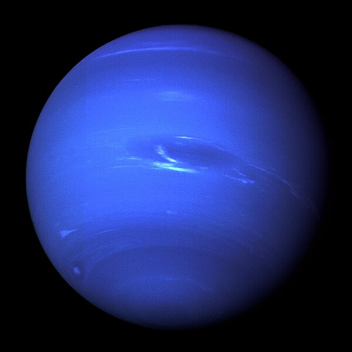

Нептун
Нептун — восьмая планета Солнечной системы по удалённости от Солнца. Нептун четвёртый по размеру и третий по массе объект Солнечной системы. Является самой дальней планетой от Солнца. Масса планеты превышает массу Земли в 17,2 раза, а диаметр превышает земной в 3,9 раза.Обнаруженный 23 сентября 1846 года Нептун был первой планетой, существование которой было доказано математическими расчетами, а не эмпирическими наблюдениями. Неожиданные изменения орбиты Урана наводили астрономов на мысль, что орбита Урана подвергается гравитационным возмущениям со стороны другой, ранее неизвестной планеты. Нептун был найден в пределах предсказанной орбиты. Среднее расстояние между Нептуном и Солнцем — 4,55 млрд км (30,1 а. е.), и полный оборот вокруг Солнца у него занимает 164,79 года.
Атмосфера Нептуна состоит в основном из водорода и гелия со следами метана. Метан в атмосфере отвечает за синий цвет планеты, но поскольку цвет Нептуна намного ярче, чем у Урана, который имеет такое же количество метана, считается, что есть ещё один ингредиент, который придает ему такой насыщенный цвет. На Нептуне самые сильные ветры в Солнечной системе, скорость которых достигает 2100 км/ч. Температура его высоких облаков достигает −218 ° C, что является одним из самых низких показателей в Солнечной системе из-за удаленности планеты от Солнца. Температура в центре Нептуна составляет около 7000 °C, что можно сравнить с температурой на поверхности Солнца.
У Нептуна известно 14 спутников, причём самому большому их них Тритону принадлежит 99,5 % их суммарной массы.
Единственным космическим кораблем, посетившим Нептун, был «Вояджер-2», который максимально приблизился к планете 25 августа 1989 года.
Назван в честь римского бога моря Нептуна. Символ планеты — стилизованное изображение трезубца Нептуна (♆).